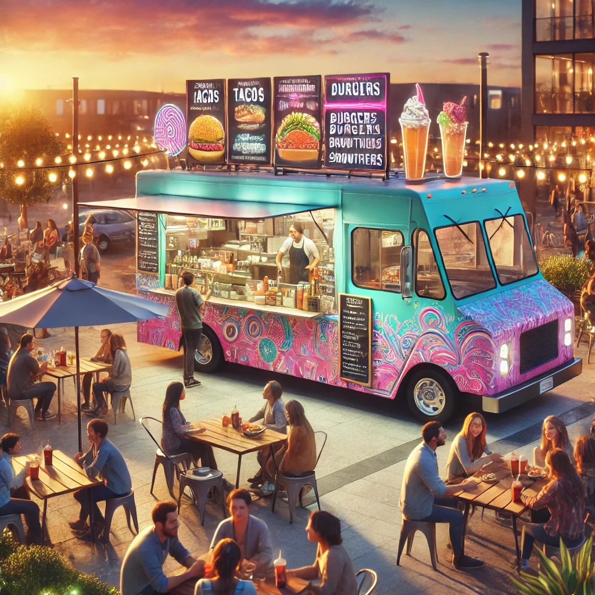

Cultural Cuisines Food Truck
While many food trucks offer single-themed menus, we celebrate global diversity by crafting dishes inspired by a range of cultures.
Whether you’re craving the zest of Mexican tacos, the savory spices of Indian curry, or the comforting flavors of Italian pasta,
our rotating menu ensures there’s always something new to try.
